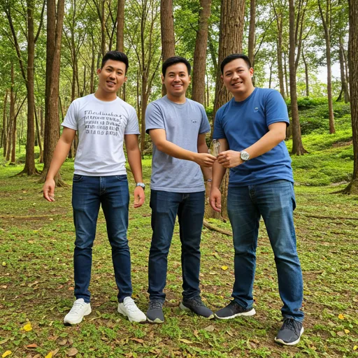

Tips Memilih Vendor Outbound Batu Malang yang Terpercaya: Panduan Lengkap agar Tidak Salah Pilih
Memilih vendor outbound yang tepat adalah kunci keberhasilan kegiatan outdoor Anda di Batu Malang.
Daftar Isi
Memilih vendor outbound Batu Malang terpercaya bukan perkara mudah. Dengan banyaknya penyedia jasa outbound yang bermunculan, Anda perlu cermat dalam menilai mana yang benar-benar profesional dan mana yang hanya menawarkan harga murah tanpa kualitas. Kesalahan dalam memilih vendor bisa berakibat fatal — mulai dari program yang tidak sesuai ekspektasi, masalah keamanan, hingga pengalaman buruk yang merusak citra perusahaan Anda.
Sebagai salah satu vendor outbound Batu Malang terpercaya yang telah beroperasi sejak 2018, Gemilang Katun Outbound akan membagikan tips dan panduan lengkap untuk membantu Anda memilih vendor yang tepat. Artikel ini akan membahas kriteria penting, red flag yang harus diwaspadai, hingga checklist praktis yang bisa Anda gunakan.
Pentingnya Memilih Vendor Outbound yang Tepat
Vendor outbound bukan sekadar penyedia peralatan dan lokasi. Mereka adalah partner strategis yang bertanggung jawab atas keselamatan, kenyamanan, dan pengalaman seluruh peserta. Vendor yang tepat akan memastikan program berjalan sesuai tujuan, sementara vendor yang buruk bisa menimbulkan risiko kecelakaan, program yang membosankan, atau bahkan kerugian finansial.
Dalam konteks Batu Malang yang memiliki medan alam beragam — mulai dari dataran tinggi, hutan, hingga sungai — kebutuhan akan vendor yang benar-benar mengenal wilayah dan memiliki pengalaman menjadi semakin krusial. Vendor lokal yang terpercaya memiliki pengetahuan mendalam tentang kondisi medan, cuaca, dan sumber daya alam setempat.
Kriteria Utama Vendor Outbound Terpercaya
1. Legalitas dan Izin Usaha
Vendor outbound profesional wajib memiliki legalitas usaha yang jelas. Ini meliputi Surat Izin Usaha, NPWP, dan idealnya sertifikasi dari asosiasi outbound atau pariwisata. Legalitas bukan sekadar formalitas, melainkan bukti komitmen vendor terhadap standar profesionalisme.
2. Portofolio dan Track Record
Minta vendor menunjukkan portofolio acara yang pernah mereka tangani. Perhatikan variasi klien, skala acara, dan dokumentasi foto/video yang menunjukkan kualitas penyelenggaraan. Vendor dengan track record yang baik tidak akan ragu menunjukkan hasil kerjanya.
3. Tim Fasilitator Bersertifikat
Kualitas fasilitator sangat menentukan keberhasilan outbound. Pastikan vendor memiliki tim fasilitator yang terlatih, bersertifikat, dan berpengalaman mengelola dinamika kelompok. Fasilitator yang baik mampu mengadaptasi program secara real-time sesuai kondisi peserta.
"Vendor outbound terpercaya bukan yang menawarkan harga termurah, melainkan yang memberikan nilai terbaik — keamanan terjamin, program berkualitas, dan pengalaman tak terlupakan." — Tim Gemilang Katun Outbound
4. Standar Keamanan yang Tinggi
Keamanan adalah aspek non-negotiable dalam kegiatan outbound. Vendor terpercaya memiliki prosedur keamanan tertulis, peralatan safety berstandar, pengecekan peralatan rutin, dan tim P3K siaga. Jangan segan bertanya detail tentang prosedur keamanan mereka.
5. Transparansi Harga dan Kontrak
Vendor profesional memberikan quotation yang detail dan transparan. Setiap item biaya harus jelas — mulai dari biaya fasilitator, peralatan, konsumsi, asuransi, hingga biaya tambahan jika ada. Hindari vendor yang memberikan harga "all-in" tanpa rincian.

Tim fasilitator profesional memandu kegiatan outbound dengan standar keamanan tinggi.
Red Flag yang Harus Diwaspadai
Waspadalah terhadap vendor outbound yang menunjukkan tanda-tanda berikut:
Harga Terlalu Murah — Harga yang jauh di bawah pasaran biasanya mengorbankan kualitas peralatan, makanan, atau kompetensi fasilitator. Ingat, keselamatan peserta tidak bisa ditawar dengan harga murah.
Tidak Memiliki Kantor Tetap — Vendor yang serius biasanya memiliki kantor atau basecamp tetap yang bisa Anda kunjungi. Vendor tanpa alamat jelas patut dicurigai.
Tidak Bisa Menunjukkan Portofolio — Jika vendor tidak bisa menunjukkan dokumentasi acara sebelumnya, kemungkinan mereka belum berpengalaman atau kualitas layanannya tidak layak didokumentasikan.
Komunikasi yang Lambat dan Tidak Responsif — Kecepatan dan kualitas komunikasi sebelum acara mencerminkan bagaimana mereka akan menangani acara Anda. Vendor yang lambat merespons biasanya juga lambat dalam bertindak di lapangan.
Menolak Survey Lokasi — Vendor profesional justru mengajak klien melakukan survey lokasi untuk memastikan kesesuaian. Jika vendor menolak atau menghindar, ini red flag serius.
Checklist Sebelum Memilih Vendor
Gunakan checklist berikut sebagai panduan evaluasi vendor outbound:
✅ Memiliki legalitas usaha yang valid
✅ Portofolio acara yang terdokumentasi dengan baik
✅ Testimoni positif dari klien sebelumnya
✅ Tim fasilitator bersertifikat dan berpengalaman
✅ Prosedur keamanan tertulis yang jelas
✅ Peralatan safety berstandar dan terawat
✅ Asuransi kecelakaan untuk peserta
✅ Quotation yang detail dan transparan
✅ Bersedia melakukan survey lokasi bersama
✅ Memiliki contingency plan untuk cuaca buruk
✅ Responsif dan komunikatif
Keunggulan Gemilang Katun sebagai Vendor Outbound Terpercaya
Gemilang Katun Outbound memenuhi seluruh kriteria vendor outbound terpercaya di atas. Dengan pengalaman sejak 2018, kami telah menangani ratusan acara outbound dari berbagai jenis perusahaan. Tim fasilitator kami bersertifikat dan terus mengikuti pelatihan terbaru. Kami juga memiliki peralatan safety berstandar internasional yang diperiksa secara rutin.
Yang membedakan kami adalah pendekatan personal dalam setiap acara. Kami tidak menggunakan template program yang sama untuk semua klien. Setiap program dirancang khusus sesuai tujuan, karakteristik peserta, dan budaya perusahaan klien. Inilah yang membuat gathering bersama Gemilang Katun selalu berkesan dan berdampak.
Proses Booking yang Ideal
Tahap Konsultasi
Langkah pertama adalah konsultasi untuk memahami kebutuhan dan tujuan acara. Vendor terpercaya akan mengajukan banyak pertanyaan untuk memastikan program yang dirancang benar-benar sesuai. Jangan ragu untuk menyampaikan detail sebanyak mungkin.
Survey Lokasi
Setelah konsultasi, lakukan survey lokasi bersama vendor. Ini penting untuk menilai kesesuaian medan, fasilitas, dan aksesibilitas. Survey juga menjadi kesempatan untuk mendiskusikan detail teknis di lapangan.
Proposal dan Kontrak
Vendor akan menyusun proposal detail yang mencakup rundown acara, daftar peralatan, tim yang dilibatkan, dan rincian biaya. Baca kontrak dengan teliti sebelum menandatangani, pastikan semua poin penting tercantum.
Proses konsultasi dan perencanaan bersama vendor outbound untuk program yang sesuai kebutuhan.
Baca Juga
Pertanyaan yang Sering Diajukan (FAQ)
Apa ciri vendor outbound yang terpercaya?
Vendor terpercaya memiliki legalitas usaha, portofolio acara terdokumentasi, testimoni positif, tim fasilitator bersertifikat, standar keamanan tinggi, dan transparansi harga tanpa biaya tersembunyi.
Apakah harga murah berarti vendor tidak berkualitas?
Tidak selalu, namun harga yang terlalu murah patut dicurigai. Vendor profesional memberikan harga reasonable sesuai kualitas. Fokus pada value yang didapat, bukan sekadar harga termurah.
Bagaimana cara mengecek reputasi vendor?
Minta referensi dari klien sebelumnya, cek ulasan di Google, lihat portofolio di media sosial, dan jangan ragu bertanya langsung tentang pengalaman mereka menangani acara serupa.
Apakah perlu kontrak tertulis dengan vendor?
Ya, sangat penting. Kontrak tertulis melindungi kedua belah pihak. Pastikan kontrak mencakup scope of work, timeline, biaya, syarat pembatalan, dan tanggung jawab masing-masing pihak.
Berapa lama sebelum acara sebaiknya booking vendor?
Idealnya 1-2 bulan sebelum hari H, terutama saat high season (April-Oktober). Booking lebih awal memberikan waktu untuk perencanaan yang matang dan memastikan ketersediaan vendor terbaik.
Kesimpulan
Memilih vendor outbound Batu Malang terpercaya membutuhkan ketelitian dan evaluasi yang cermat. Jangan tergoda oleh harga murah tanpa mempertimbangkan kualitas, keamanan, dan profesionalisme. Gunakan kriteria dan checklist yang telah kami bagikan untuk memastikan Anda memilih partner outbound yang tepat. Dengan vendor yang berkualitas, kegiatan outbound Anda akan menjadi pengalaman yang aman, seru, dan berdampak positif bagi seluruh peserta.
Ingin berkonsultasi dengan vendor outbound terpercaya? Hubungi Gemilang Katun Outbound untuk konsultasi gratis tanpa komitmen!